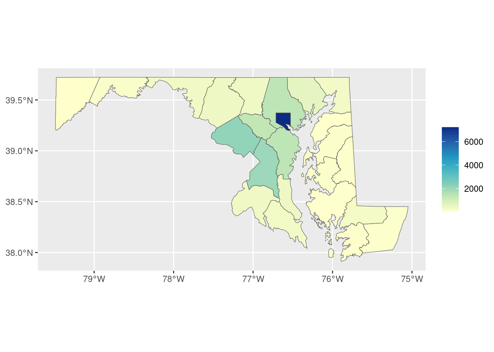

library(dplyr)
library(justviz)
library(sf)
library(ggplot2)
# justviz::tracts_sf is only baltimore & neighboring counties
all_tracts_sf <- tigris::tracts(state = "24", cb = TRUE, progress_bar = FALSE) |>
select(geoid = GEOID, county = NAMELSADCO)
counties_sf <- all_tracts_sf |>
group_by(county) |>
summarise()13. Mapping data to space
Space
Think back to the first principles we talked about with mapping data onto visual encodings (reading lengths of bar charts, reading darkness of color). With spatial data, we have many of the same principles, but we’re confined by location. We can’t just, say, flip our axes to make them easier to read, or change the aspect ratio to fit in a tight space on a page. We also can’t just arbitrarily change the size of things we’re drawing—for example, in a US state map, we can’t just make Texas less huge.
That said, there are a lot of decisions we do make about how we encode data to space or manipulate it, and these can change the nature of what we know about our data. That makes it important to think really hard about those decisions, and situate those decisions in the purpose of your visualization, your audience, the scope of your work, domain knowledge, etc etc. Often there are no perfectly right answers.
When we looked at Hans Rosling’s bubble plots, the size (area) of points showed the population of each country. That makes sense perceptually—your brain is going to see things of different sizes, pick up on that difference, and think it means something. But in spatial data, it might not; different sizes might actually interfere with our ability to understand what the visual is meant to show. That is, the area of a location might have something to do with the data, but oftentimes it doesn’t (sometimes if anything it shows the opposite—some of the largest US states have among the smallest populations, same goes for Maryland counties). Census tracts are designed to have similar populations, but counties are arbitrary political boundaries.
acs |>
filter(level == "county") |>
ggplot(aes(x = area_sqmi, y = total_pop)) +
geom_point() +
ggrepel::geom_text_repel(aes(label = name),
data = ~filter(., between(total_pop, 5e5, 7e5))) +
labs(title = "Total population vs area, Maryland counties")acs |>
filter(level %in% c("tract", "county")) |>
ggplot(aes(x = total_pop)) +
geom_histogram() +
facet_wrap(vars(level), scales = "free") +
labs(title = "Total population, Maryland counties and tracts")Can you guess what this is a map of?

Areal units
One major issue that comes up in mapping is the modifiable areal unit problem:
The MAUP occurs when statistical results or visual patterns embedded in maps differ according to changes in the scale or zoning of the partitioning scheme used to aggregate spatial data (Openshaw, 1984). The problem commonly occurs when data on individual objects, such as people, are disseminated in data sets in aggregated form, such that the actual spatial distribution of the original individual objects is unobtainable….
One consequence of the MAUP is that spatial patterns that may be observed in a map using one partitioning scheme may not be visible using another partitioning scheme where the scale or zoning differs. –Mennis (2019)
Mennis, J. (2019). Problems of Scale and Zoning. Geographic Information Science & Technology Body of Knowledge, 2019(Q1). https://doi.org/10.22224/gistbok/2019.1.2
Sometimes the units you use for analysis are ones you can decide on, but sometimes you don’t have a choice (e.g. data would be most useful at the tract level but is only available by town; in a survey you ask for people’s ZIP code because you know they probably don’t know their tract number).
Similar to this is the ecological fallacy, where you assume that patterns or phenomena that you see in aggregate are true for individuals or individual areas within that population.
MAUP and ecological fallacy
When we break a geography into areas that are too large, we lose the patterns that occur within them. If we break into areas that are too small, we might no longer be able to do the analysis we want, or we might be looking at something so closely that patterns aren’t able to develop. For example, counting trees across an entire city won’t tell you anything about tree density in people’s neighborhoods if most of those trees are within one large park; counting trees per parcel in that same city won’t be that useful if you only expect one or two trees at most in front of any house, and if residents get the same benefits of having a tree in front of their neighbor’s house as they do their own.
For example, Baltimore city is 27 percent white. That’s the lowest share of all the counties in the state except Prince George’s. But that population is very concentrated within the city.
acs_county <- acs |>
filter(level == "county") |>
mutate(name = forcats::as_factor(name) |>
forcats::fct_reorder(white, .desc = FALSE))
w1 <- acs_county |>
ggplot(aes(x = name, y = white)) +
geom_col(width = 0.8) +
coord_flip() +
scale_y_continuous(labels = scales::label_percent()) +
labs(x = NULL)
w2 <- acs |>
filter(level == "tract") |>
mutate(county = forcats::as_factor(county) |>
forcats::fct_relevel(levels(acs_county$name))) |>
ggplot(aes(x = county, y = white)) +
geom_boxplot() +
coord_flip() +
scale_y_continuous(labels = scales::label_percent()) +
labs(x = NULL)
library(patchwork)
w1 + w2Even though a much lower share of Baltimore city overall is white than some of the smaller or less diverse counties like Garrett and Carroll, the city is so segregated that we have neighborhoods that do in fact rival those counties’ averages. We lose that fact when we only look at averages or aggregates, but it’s a major pattern underlying much of how the city and region work (hot take: that’s by design).
Joining spatial and nonspatial data: a detour
You can join sf data frames with other data frames with dplyr and other tools like we’ve done before. Both tracts_sf and acs inherit the data.frame object type, but tract_sf also has the sf object type. You always know a sf object by how it prints, starting with “Simple feature collection …”.
[1] "sf" "data.frame"[1] "tbl_df" "tbl" "data.frame"| county | geoid | geometry |
|---|---|---|
| Baltimore city | 24510160300 | POLYGON ((-76.64612 39.3031… |
| Baltimore city | 24510020100 | POLYGON ((-76.59047 39.2916… |
| Baltimore County | 24005402602 | POLYGON ((-76.76732 39.3673… |
| Baltimore city | 24510190300 | POLYGON ((-76.64696 39.2881… |
| Baltimore city | 24510271801 | POLYGON ((-76.68336 39.3517… |
| Anne Arundel County | 24003730403 | POLYGON ((-76.62029 39.1510… |
| level | county | name | total_pop | white | black | latino | asian | other_race | diversity_idx | foreign_born | total_hh | homeownership | total_cost_burden | total_severe_cost_burden | owner_cost_burden | owner_severe_cost_burden | renter_cost_burden | renter_severe_cost_burden | no_vehicle_hh | median_hh_income | ages25plus | less_than_high_school | high_school_grad | some_college_or_aa | bachelors | grad_degree | pov_status_determined | poverty | low_income | area_sqmi | pop_density |
|---|---|---|---|---|---|---|---|---|---|---|---|---|---|---|---|---|---|---|---|---|---|---|---|---|---|---|---|---|---|---|---|
| us | NA | United States | 331097593 | 0.59 | 0.12 | 0.19 | 0.06 | 0.05 | 0.7376547 | 0.14 | 125736353 | 0.65 | 0.29 | 0.14 | 0.21 | 0.09 | 0.45 | 0.23 | 0.08 | 75149 | 226600992 | 0.11 | 0.26 | 0.28 | 0.21 | 0.13 | 323275448 | 0.13 | 0.29 | NA | NA |
| msa | NA | Abilene, TX Metro Area | 176656 | 0.63 | 0.07 | 0.25 | 0.02 | 0.03 | 0.6353998 | 0.06 | 65075 | 0.63 | 0.27 | 0.11 | 0.18 | 0.05 | 0.43 | 0.20 | 0.04 | 61924 | 111552 | 0.11 | 0.31 | 0.32 | 0.17 | 0.09 | 164028 | 0.14 | 0.35 | 2743.514 | 64.39042 |
| msa | NA | Akron, OH Metro Area | 700578 | 0.78 | 0.12 | 0.02 | 0.03 | 0.05 | 0.4932053 | 0.05 | 292223 | 0.68 | 0.25 | 0.12 | 0.16 | 0.06 | 0.43 | 0.22 | 0.08 | 68647 | 487995 | 0.07 | 0.31 | 0.28 | 0.21 | 0.13 | 684199 | 0.12 | 0.28 | 900.198 | 778.24875 |
| msa | NA | Albany, GA Metro Area | 147716 | 0.41 | 0.52 | 0.03 | 0.01 | 0.03 | 0.5978239 | 0.03 | 57043 | 0.57 | 0.30 | 0.16 | 0.18 | 0.09 | 0.46 | 0.27 | 0.09 | 53173 | 97010 | 0.14 | 0.32 | 0.31 | 0.13 | 0.10 | 142224 | 0.22 | 0.41 | 1591.030 | 92.84302 |
| msa | NA | Albany-Lebanon, OR Metro Area | 128598 | 0.83 | 0.00 | 0.10 | 0.01 | 0.06 | 0.3838219 | 0.04 | 49944 | 0.67 | 0.31 | 0.14 | 0.23 | 0.10 | 0.45 | 0.20 | 0.04 | 69523 | 89890 | 0.09 | 0.29 | 0.41 | 0.13 | 0.07 | 126135 | 0.12 | 0.33 | 2289.276 | 56.17408 |
| msa | NA | Albany-Schenectady-Troy, NY Metro Area | 901729 | 0.77 | 0.07 | 0.06 | 0.05 | 0.05 | 0.5241427 | 0.08 | 372919 | 0.64 | 0.25 | 0.12 | 0.17 | 0.07 | 0.41 | 0.22 | 0.10 | 83360 | 627234 | 0.07 | 0.25 | 0.28 | 0.22 | 0.18 | 871777 | 0.11 | 0.23 | 2811.804 | 320.69412 |
A data frame can have a geometry column without the data frame being an sf object. If I convert tracts_sf to a base data frame, it still has a geometry column (the type is shown as sfc_POLYGON, and it’s a list-column of polygons), but it’s no longer an sf object.
| county | geoid | geometry |
|---|---|---|
| Baltimore city | 24510160300 | POLYGON ((-76.64612 39.3031… |
| Baltimore city | 24510020100 | POLYGON ((-76.59047 39.2916… |
| Baltimore County | 24005402602 | POLYGON ((-76.76732 39.3673… |
| Baltimore city | 24510190300 | POLYGON ((-76.64696 39.2881… |
| Baltimore city | 24510271801 | POLYGON ((-76.68336 39.3517… |
| Anne Arundel County | 24003730403 | POLYGON ((-76.62029 39.1510… |
[1] "data.frame"Why this matters to you is this gotcha: when you join an sf data frame with a regular one, the “left” data frame in the join takes priority in setting the object type.
sf_on_left <- inner_join(tracts_sf, acs, by = c("geoid" = "name"))
sf_on_right <- inner_join(acs, tracts_sf, by = c("name" = "geoid"))
class(sf_on_left)[1] "sf" "data.frame"[1] "tbl_df" "tbl" "data.frame"Remember that nice plot method for sf objects? It only applies to sf objects, i.e. sf_on_left but not sf_on_right.
Similarly, ggplot2::geom_sf expects an sf object, not just a geometry column: 1
1 There is a workaround but it also requires telling ggplot your data’s CRS, and why not just do it the expected way?
You’ll probably make this mistake anyway—I do it all the time—but now you have a heads up about it.
You can also just convert your data frame with an sf column back into a sf data frame.
Joining spatial and nonspatial data for real
Now that we know what to watch out for, we can actually join our spatial and nonspatial data and make a choropleth. This is a type of thematic map (probably the most common type) where you shade areas in a map based on some additional value. These can be very useful but also easily misleading.
all_tracts_sf |>
left_join(acs, by = c("geoid" = "name", "county")) |>
ggplot(aes(fill = white)) +
geom_sf(color = "white") +
scale_fill_distiller(palette = "YlGnBu", direction = 1) +
labs(title = "Percent white, Maryland tracts, 2022")There’s a minor problem with this map, but it’s a byproduct of the very different areas of tracts here, particularly in dense urban tracts: some of those values in Baltimore or PG County look very low. Is it really because their values are close to 0, or is some of it just the white borders around tracts?
all_tracts_sf |>
left_join(acs, by = c("geoid" = "name", "county")) |>
ggplot(aes(fill = white)) +
# set linewidth to adjust thickness of borders
geom_sf(color = "white", linewidth = 0) +
scale_fill_distiller(palette = "YlGnBu", direction = 1) +
labs(title = "Percent white, Maryland tracts, 2022")It’s both! I’m endlessly amazed by how often I see this in published work. Sometimes the borders are useful, but here they weren’t really.
Note also that these are percentages, not the number of white people per tract. With tracts, since they’re of standardized sizes, this wouldn’t be as big a deal as with other geographies, but if we showed populations in this way, we’d just be displaying population density. That’s because what you’re reading is a value presumably spread over an area. You pretty much always want a choropleth to be a value that’s been scaled by some population measure, or something not based on a raw count:
- percentage of population ages 65+
- median household income
- percentage of households without a car
- polling places per 1,000 registered voters
- GDP per capita
In most cases, a choropleth would not be appropriate for count of people ages 65+ or total GDP, etc.
Exercises
Time to make a choropleth! Join the ACS data to one of the tract shapefiles (justviz::tracts_sf for just the city and its neighboring counties, or all_tracts_sf defined here for the whole state). Find a different variable of interest and make a choropleth of it like the ones above.
Filter for just Baltimore city or a single county (use filter(county == "county name")), and make another choropleth of the same variable. Compare what you can learn from looking at that choropleth versus looking at the county-wide value. In some places, the tracts will be very different from the county aggregate; in a more homogenous area, they might not be.